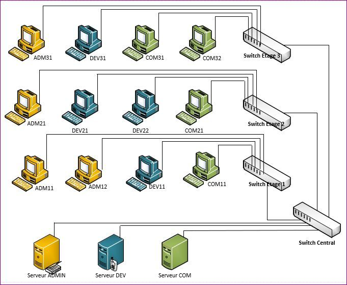
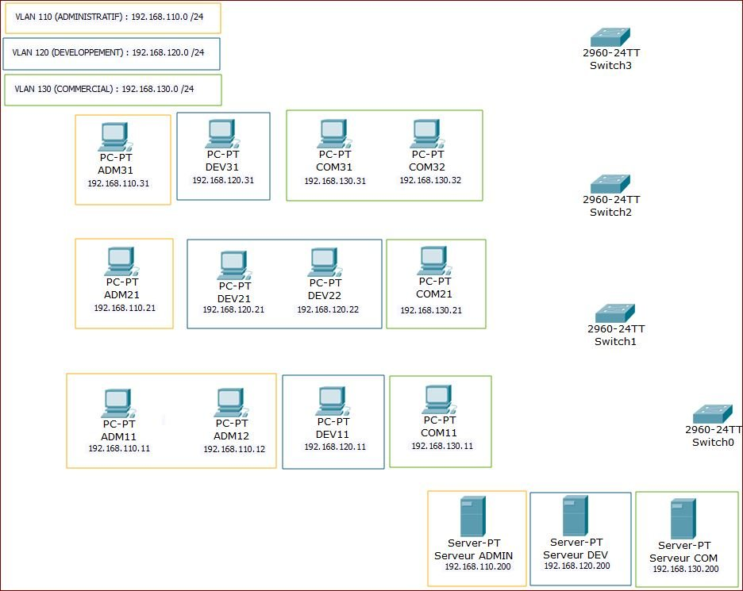

Étape 1 sur 3
Contexte et cahier des charges
Segmenter les trois services d'une entreprise fictive avec des VLAN par port.
Contexte
L'entreprise fictive CAVELAN compte trois services (administratif, développement, commercial) dont les bureaux sont répartis sur trois étages. Chaque service est autonome : on veut séparer logiquement les flux tout en gardant de la souplesse sur l'emplacement des postes. Exercice SISR « Exolab » (réseau CERTA) réalisé sous Cisco Packet Tracer.
Plan d'adressage et VLAN
| Service | Réseau | VLAN |
|---|---|---|
| Administratif | 192.168.110.0/24 | 110 |
| Développement | 192.168.120.0/24 | 120 |
| Commercial | 192.168.130.0/24 | 130 |
Règles communes à tous les commutateurs
| Ports | Rôle |
|---|---|
| 1 à 6 | VLAN 110 |
| 7 à 12 | VLAN 120 |
| 13 à 18 | VLAN 130 |
| 19 et 20 | VLAN par défaut (ajustement) |
| 21 à 24 | Trunk, interconnexion des commutateurs |
Captures


Savoir-faire mobilisés
- VLAN
- Plan d'adressage
- Cahier des charges